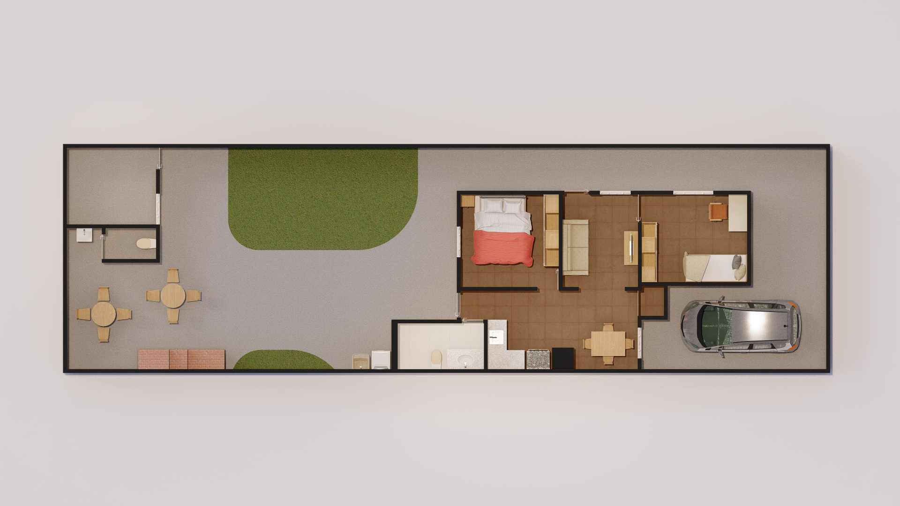
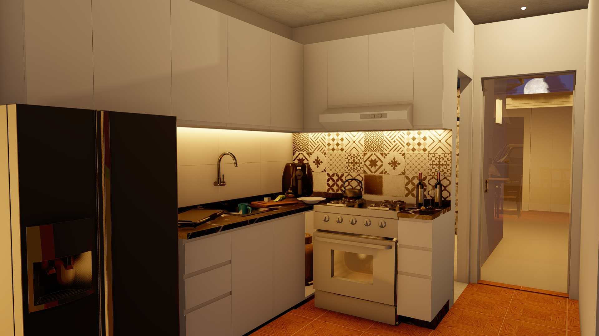
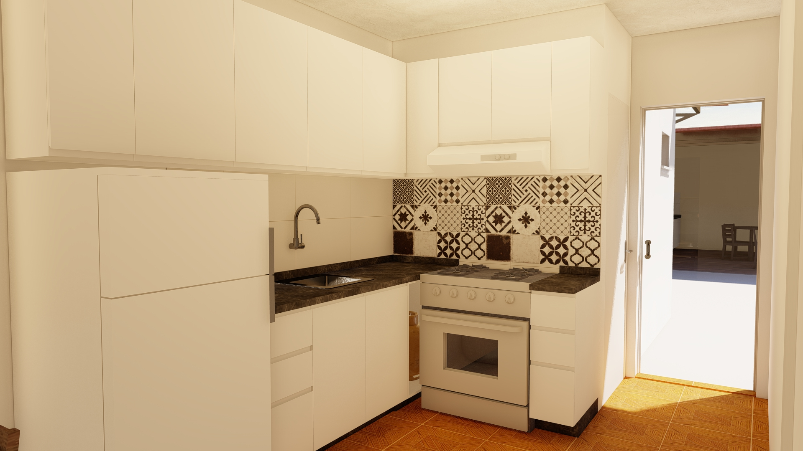
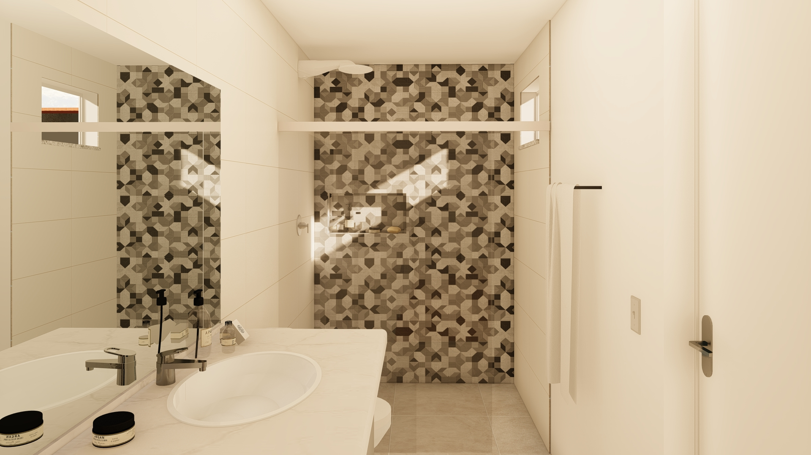
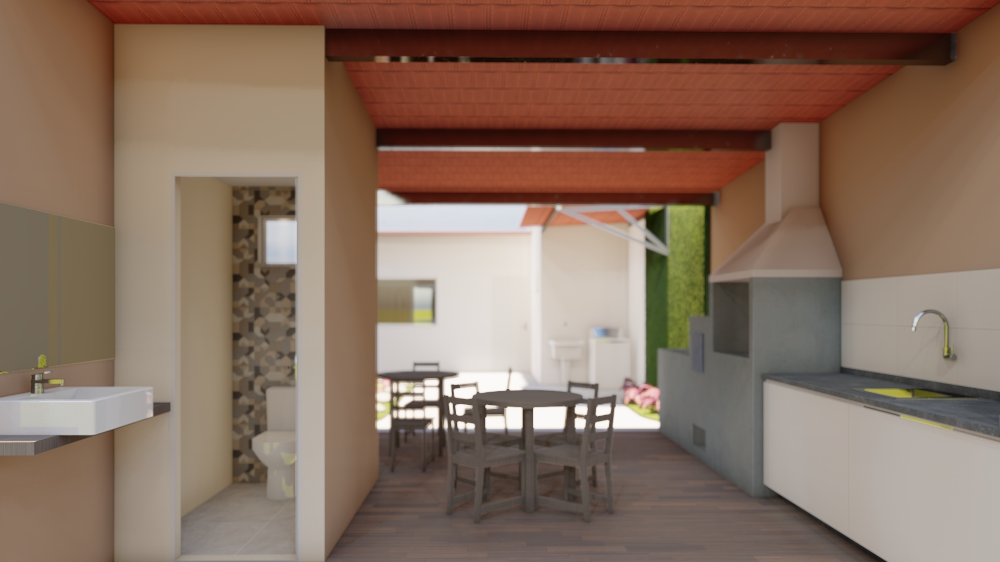
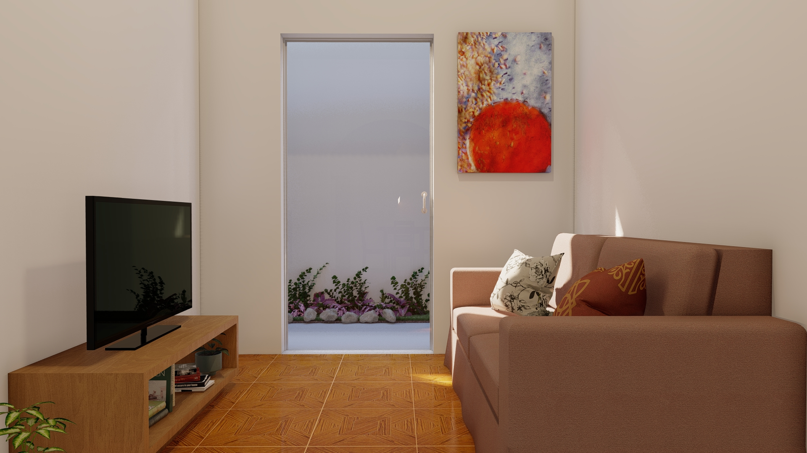

Matéria: Arquitetura Popular
A matéria arquitetura popular do curso de arquitetura da UFSJ tem a proposta de dar assistência arquitetônica à quem normalmente não teria como acessá-la. Neste "Estudio" foram desenvolvidas três propostas de plantas para reforma, porém aqui será mostrada apenas a escolhida.
Com foco em minimizar as intervenções na estrutura original da casa foi proposta uma reorganização das funções dos comodos e ampliação do banheiro conforme a necessidade dos clientes. Também foi uma preocupação em dar função ao antigo "barracão" dos fundos que virou uma área de churrasqueira e um depósito.
  
